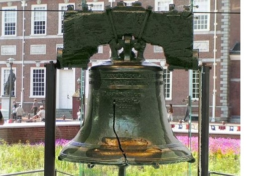

世界上最著名的室内花展—费城花展，美国最古老的民间游行—古装乐团游行，美国最精致的古董收藏品展览—费城古董展，美国最古老的感恩节大游行—感恩节大游行......一年四季，这座城市的庆祝活动轮番上演......
众所周知，费城是美利坚合众国的摇篮：1774年，美国的第一次大陆会议于费城召开；之后《美国独立宣言》（United States Declaration of Independence）于费城批准及签署。从此，费城便有了许多在美国历史上各个领域里程碑式的“首举”。这些首举不仅仅改变了美国人及其文化，更给世界各地的人们带来了新思想和文化冲撞。
 自由钟中心（Liberty Bell Center）1751年这座钟由伦敦著名的Whitechapel铸造厂铸造，后移交独立大厅。但是在第一次测试中出现了裂痕，后来不得不在费城重铸。 从1751年到1840年，经过将近90年的使用，自由钟出现了裂痕。1846年费城决定在乔治·华盛顿的生日之前修复。可是修复工作并不成功。此后自由钟再没有敲过。自由钟是 费城 的象征，更是美国自由精神的象征。 开放时间: 早上9:00 – 下午5:00 地址:6th St & Market St, Philadelphia, PA 19106